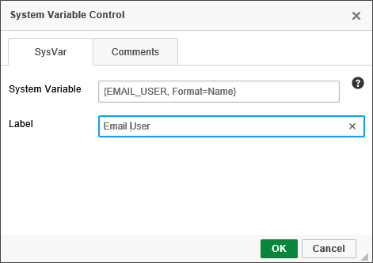
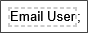
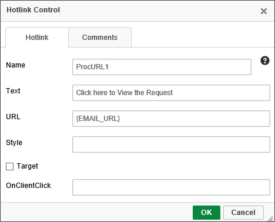
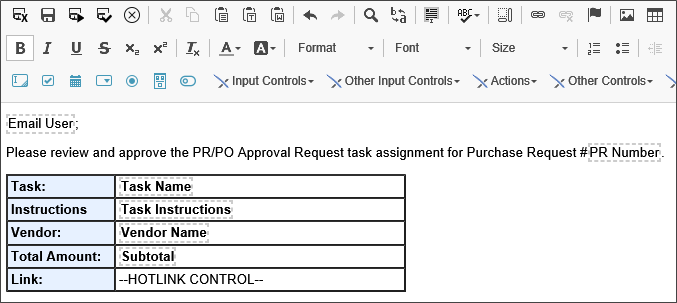
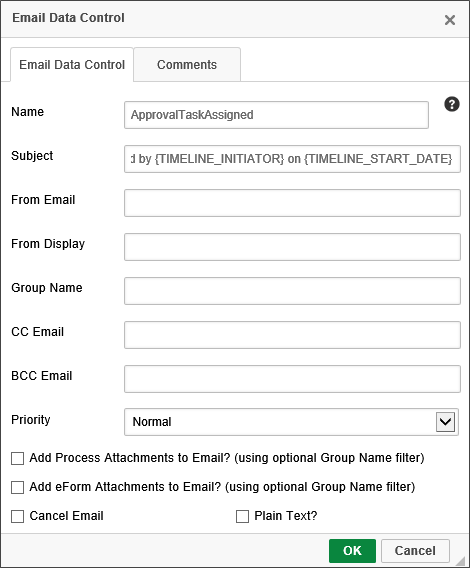

|
|
Lesson Contents | In this Lesson, you will learn how to create a Form to use as an email template. |
Process Director has a generic template for email notifications that can be used in any of your implementation projects. The best practice, however, is to create your own email template, When you create your own email templates, you can customize the template to show information specific to your process, Form fields, corporate branding, etc. You can then specify which email template you wish to use for any notification that your implementation generates.
An email template is a Form, just like the Purchase Request Form we just created, and is edited in the Online Form Designer, just like any other Form. One big difference, however, is that Form templates do not use any input control.
In this lesson, we will create a simple email template that we will use in the purchase request process we will create in the next module.
To create the custom email template we will use for our sample project, first navigate through the Content List to the Forms folder you created for the Purchase Request Form. In the Forms folder, Select "Form Definition" from the Create New… dropdown to open the Create Form screen.
In the Create Form screen, set the Form Name property to "Notification Email Template".
Next, click the Options section bar to open the Options section. Check the Email Template check box to tell Process Director that this new Form will be used as an email template. Once you have done so, click the OK button to create the Form and open the editor for the new Form definition.
In the editor, at the top of the form, type the title, "PR Approval Process Notification".
Hit the [ENTER] key twice to leave a blank line under the title, then select System Variable from the BP Logix Form Controls menu to insert a System Variable control on the page.
The SysVar control enables system variables to be displayed on a Form. The SysVar control will be replaced by the actual value of the System Variable when the form is displayed to the user. For example, information about the process, the current user, Meta Data, and many other types of information can be displayed on the Form by using the System Variable control. Refer to the System Variables Reference Guide for a list of all the existing System Variables, their available formats and options, and examples of the proper syntax to invoke them.
The properties dialog box for the System Variable control has a System Variable property that you can use to manually type the System Variable you wish to display.

You can also manually type the System variable into the Property Box. Enter the following text into the System Variable property box:
{EMAIL_USER, Format=Name}
Next, enter the text, "Email User", into the Label property box.
Click the OK button to close the dialog box and apply the property, then add a semicolon immediately after the SysVar control, so that it appears like the example below.

In the context of the email template, Process Director will interpret this System Variable to refer to the task user to whom the email is sent. Using the System Variable in this way enables you to start the email with a salutation containing the user's name.
Unlike a system variable for a global object, like the Email User system variable we configured above, a System Variable for a Process Director Object usually identified the Content Object type of the variable we are trying to use. So, in the case of a form field System Variable, the formal syntax for calling the value of a form field would be:
{FORM:FieldName}
Since form fields are a very, very commonly used System variable type, you can skip the "FORM" identifier, and just enter the colon (:) prior to the field name, like so:
{:FieldName}
In fact, many Content List object object System Variables have shorthand identifiers. For instance, a Business Value System Variable is formally configured as:
{BUSINESS_VALUE:BusinessValueName}
But, it can also be called with the alternate syntax:
{BV:BusinessValueName}
Again, you can refer to the System Variables Reference Guide for learn the alternate syntax to call different types of System Variables.
Start a new line, and type the text "Please review and approve the PR/PO Approval Request task assignment for Purchase Request #". Immediately after the pound sign (#), insert another SysVar control. In this case, we want to display the value of a form field for the Form that is associated with the process, which is the Purchase Request Form.
In the properties of the SysVar control, set the System Variable property to:
{:PRNumber}
Set the Label property to "PR Number", then click the OK button to save and close the dialog box.
Next, we need to create a table to display some other System Variable and Form Field controls to provide users with some extra information about the process. First, create a table with two columns and five rows. In the first column, type the following five text values, one value per row:
Task:
Instructions:
Vendor:
Total Amount:
Link:
These text values will serve as the label for the System Variables that we will place in each row. If you like, you can add some styles, like background colors or borders to the table or to the cells in column one.
In the second column of the table, place the following SysVar controls in the first four rows:
In the fifth row of the table, insert a HotLink control. The HotLink control creates a hyperlink when the Form is displayed in the browser. In this case, we want to provide a link to the Process URL for Process Director Form containing the Purchase Request.
In the control's properties dialog box, then set the Name property to "ProcUrl1". Set the Text property to "Click here to view the request." Finally, set the URL property to "{EMAIL_URL}".
The {EMAIL_URL} system variable is the Process Director-generated URL to the Form instance for this request.

Once you've configured the HotLink control, your template should look similar to the example displayed below.

Leave a blank line below the table, and then insert an EmailData control. The EmailData control sets several values for use in your email system, such as the email’s Subject, “From” address, Name, and Priority.
In the properties dialog box for the EmailData control, set the Name property to "ApprovalTaskAssigned". Set the Subject property to "Please review and approve {:PRNumber} submitted by {TIMELINE_INITIATOR} on {TIMELINE_START_DATE}".
Note that we can use System Variables in the Subject property to display the PR Number, the name of the person who submitted the request, and the date the approval process was started, which is the same as the form submit date.

Click the OK button to save the configuration changes to the EmailData control and return to the design page.
We're now done with the email template. Save and close the email template, and return to Process Director by clicking the Save and Close Form toolbar button.